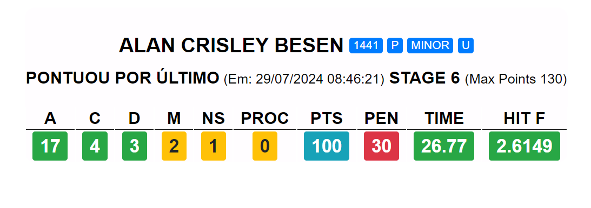
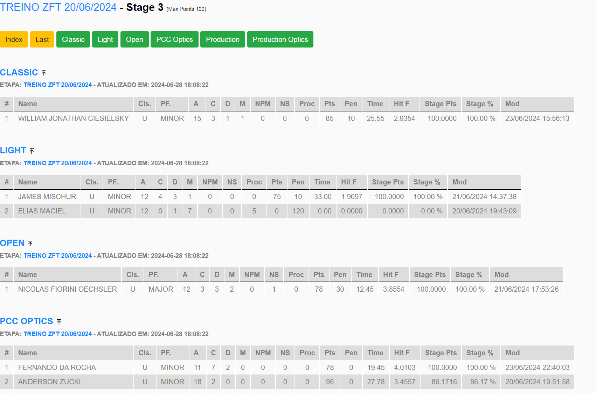

Capturas de Tela

Lista de Tablets

Último Atirador do Stage

Stage Detalhado

Resumo do Stage
Integração avançada para Leaderboards em Tempo Real e Transmissão Online de Competições IPSC.
Saiba MaisFoco total em competições de IPSC, atendendo às necessidades específicas do esporte.
Compatível com as versões 1.7.x e 2.0.x, garantindo sincronização perfeita dos resultados.
Atualização instantânea dos placares, permitindo acompanhamento em tempo real.
Lista de Tablets
Último Atirador do Stage
Stage Detalhado
Resumo do Stage